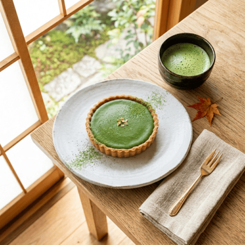

關於溫度，與那些緩慢的美好。
每一顆豆子、每一份麵糊，都經過雙手反覆確認。
我們相信，只有放慢腳步，才能烘焙出能溫暖人心的香氣。
在這裡，不需趕時間，請盡情享受被時光遺忘的片刻。
每一顆豆子、每一份麵糊，都經過雙手反覆確認。
我們相信，只有放慢腳步，才能烘焙出能溫暖人心的香氣。
在這裡，不需趕時間，請盡情享受被時光遺忘的片刻。
自家烘焙咖啡豆，保留最純粹的果酸與堅果香氣，每一口都是溫柔的問候。
堅持每日手作甜點，減糖配方搭配季節鮮果，帶來無負擔的療癒滋味。
高留白的純淨空間，伴隨輕柔的木質調音樂，讓身心都能獲得完整的釋放。
季節限定的果香與經典的濃郁，你今天想與哪一種滋味相伴？

嚴選北海道十勝鮮乳，輕柔包覆著手摘野莓。
入口即化的輕盈感，彷彿春天的微風拂過指尖。
NT$ 180

濃厚回甘的宇治抹茶，搭配酥脆的法式塔皮。
微苦與微甜在口中完美交織，是大人的專屬浪漫。
NT$ 200
「很喜歡這裡的留白感，坐在窗邊喝著手沖咖啡，感覺一整週的疲憊都被治癒了。抹茶塔超級推薦！」

「甜點不會太甜，吃得出食材的用心。店裡的音樂很舒服，是一個人帶著書來也能待很久的好地方。」

「每個角落都好適合拍照，光線很美。生乳捲的鮮奶油非常輕盈，不愛吃甜食的我也愛上了。」

推開門，這裡永遠為你留著一個溫暖的座位。